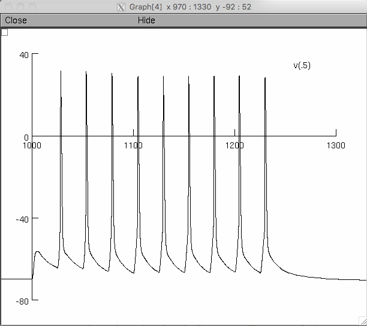
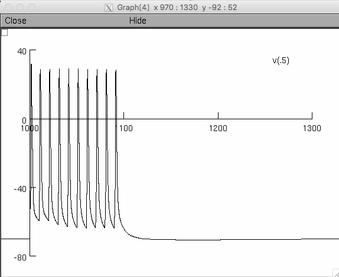
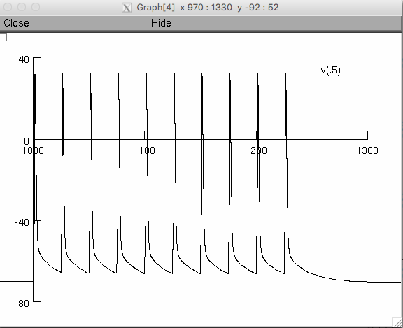
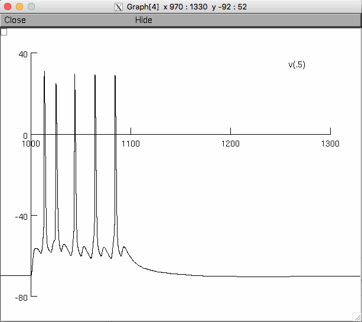

This is the NEURON code associated with the paper:
Combe CL, Canavier CC, Gasparini S (2018) Intrinsic mechanisms of frequency selectivity in the proximal dendrites of CA1 pyramidal neurons. J Neurosci
http://dx.doi.org/10.1523/JNEUROSCI.0449-18.2018
This model entry was contributed by C Canavier. The freely available NEURON
simulation enivronment (from http://www.neuron.yale.edu) is required for this model.
To use:
-------
Autolaunch from modeldb if the browser is capable or compile the mod
files and start with mosinit.hoc (easiest) or either multisyn.hoc or
simplestim.hoc with nrngui. (If you need more help to run the model,
please refer to:
https://senselab.med.yale.edu/ModelDB/NEURON_DwnldGuide.cshtml)
On linux for example typing
nrngui multisyn.hoc
Will generate a graph like figure 1B1 (left 40Hz):

and running:
nrngui simplestim.hoc
Will generate a graph like figure 1C (right 100Hz):

Additional running notes:
-------------------------
The frequency of somatic stimulation can be changed using the
prameter period in simplestim.hoc which is currently set to 10 ms
for 100 Hz stimulation. Re-running simplestim.hoc at 25 ms will then
generate a graph similar to figure 2C (left):

The frequency of synaptic stimulation can be changed using the
parameter named “interval in multisyn.hoc, which is currently set to
25 ms for 40 Hz stimulation. Re-running mutlisyn.hoc with 10 ms will then
generate a graph similar to figure 1B1 (right):

The calcium concentration in Figure 1B2 and the SK activation in
Figure 1B3 are from compartment trunk[10]. The SK activation variable
was cubed offline.
In order to turn the SK conductance off , set the parameter
mykca_init to zero in cell-setup.hoc